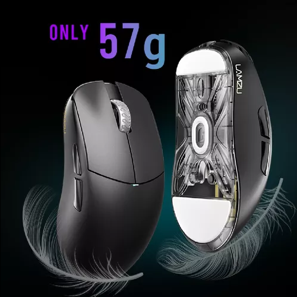
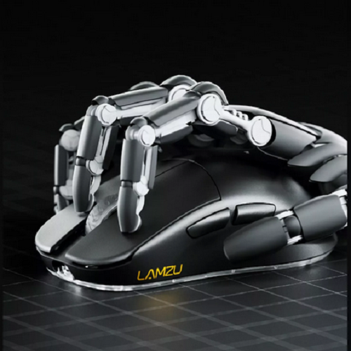
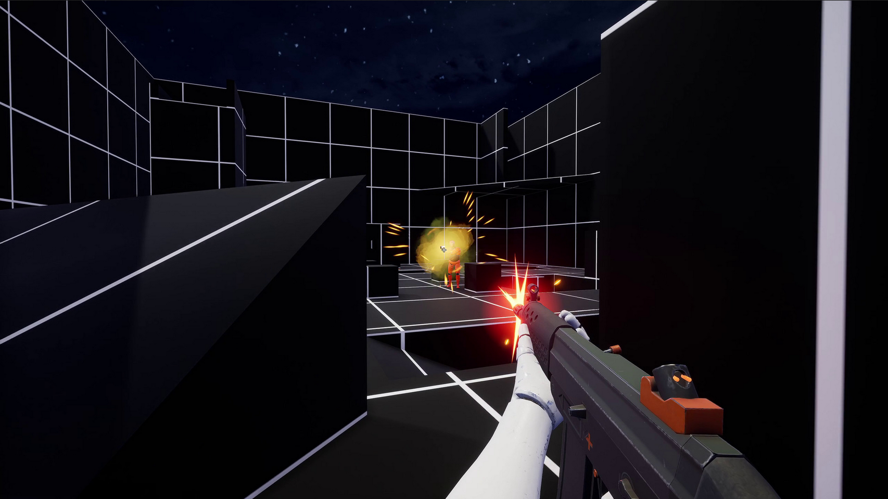

Aim Training en Shooters
Esta web está enfocada en productos y guías para mejorar la puntería en juegos shooters.Mejores periféricos para "tracking".
Lamzu Atlantis V2 4k
Lamzu Atlantis fue diseñado para jugadores exigentes que quieren un control completo. Un corazón del mouse es su sensor, determina su precisión que es clave durante el juego. El atlantis cuenta con un sensor óptico PAW3395 de alta calidad que te permite elegir libremente la escala DPI entre 200 y 26000 DPI. Tener un dispositivo tan avanzado te hace querer disfrutarlo para siempre que sea posible. Por lo tanto, decidimos equiparlo con interruptores Huano Blue Pink Dot Supera los límites del rendimiento y explora todo el potencial de los juegos.
Agarre "Claw"
Este tipo de agarre se está volviendo cada vez más popular y muchos jugadores profesionales lo utilizan al entrenar. Al apoyar la parte trasera de la palma en el ratón, se reduce la exigencia en las articulaciones de los dedos y la muñeca en comparación con el agarre de dedos. Además, como los dedos están más libres que en el agarre de palma, se pueden realizar clicks con mayor rapidez y controlar los movimientos de manera muy precisa, lo que solo tiene ventajas durante el juego y lo convierte en un agarre muy equilibrado.

Mejores programas para mejorar la puntería.
KovaaKs
